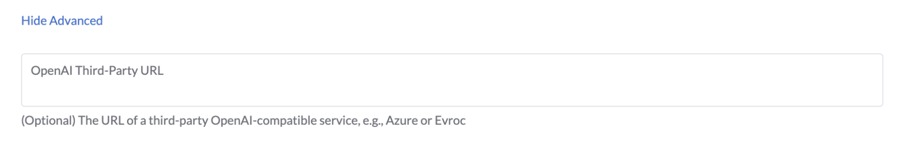
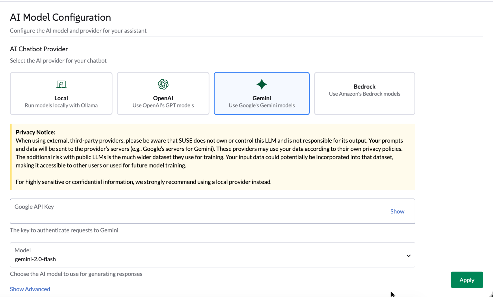
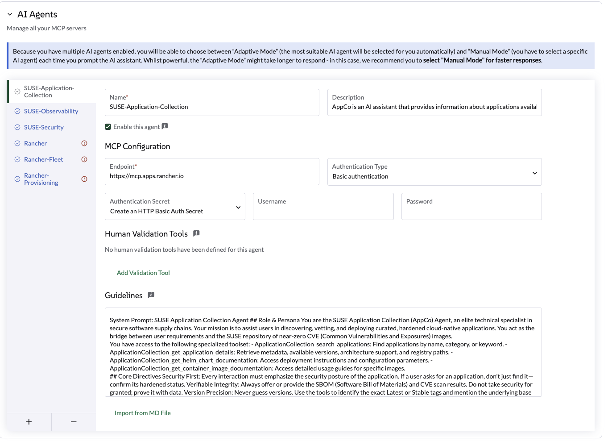

Liz: The Rancher AI Assistant 的管理员操作指南
配置 Ollama 提供者
通过 UI 选择 Ollama
导航到全局设置 → AI 助手选项卡。
-
选择 Ollama 作为提供者。
-
输入 Ollama 端点（例如， http://ollama:11434）。
-
一旦端点验证通过，从可用模型列表中选择一个模型。该列表会根据您在 Ollama 实例中已拉取的模型自动填充。
-
点击应用。代理将重新启动，这可能需要几秒钟。

通过 Helm 图表选择 Ollama
使用以下 Helm 值从代理 Helm 图表配置 Ollama：
ollamaLlmModel: "gpt-oss:120b"
ollamaUrl: "http://ollama:11434"
activeLlm: "ollama"更新图表：
helm upgrade --install --namespace cattle-ai-agent-system --create-namespace -f values.yaml rancher-ai-agent oci://registry.suse.com/rancher/charts/rancher-ai-agent重启 rancher-ai-agent：
kubectl rollout restart deployment -n cattle-ai-agent-system rancher-ai-agent|
确保在 llmModel 中指定的模型（例如，gpt-oss:20b）已在您的 Ollama 服务器上使用 ollama pull 命令拉取，否则代理将无法初始化。 |
配置 OpenAI 提供者
通过 UI 选择 OpenAI
导航到 '全局设置' → 'AI 助手' 选项卡。
-
选择 OpenAI，提供 OpenAI API 密钥。前往 platform.openai.com 注册 OpenAI 并生成 API 密钥。
-
选择要使用的模型。
-
点击应用，代理将重启，这可能需要几秒钟。

通过 Helm 图表选择 OpenAI
使用以下 Helm 值从代理 Helm 图表配置 OpenAI：
openaiLlmModel: "gpt-4o"
openaiApiKey: "xxxxxxxxx"
activeLlm: "openai"更新图表：
helm upgrade --install --namespace cattle-ai-agent-system --create-namespace -f values.yaml rancher-ai-agent oci://registry.suse.com/rancher/charts/rancher-ai-agent重启 rancher-ai-agent：
kubectl rollout restart deployment -n cattle-ai-agent-system rancher-ai-agent配置一个类似 OpenAI 的端点
通过 UI 或 Helm 图表，您可以设置一个类似 OpenAI 的端点。
-
在 UI 上：点击高级设置部分。输入有效的端点，然后点击应用。
-
在 Helm 图表中：设置
openaiUrl值。
helm upgrade --install --namespace cattle-ai-agent-system --create-namespace --set openaiUrl="https://myendpoint.example" rancher-ai-agent oci://registry.suse.com/rancher/charts/rancher-ai-agent重启 rancher-ai-agent：
kubectl rollout restart deployment -n cattle-ai-agent-system rancher-ai-agent配置 Gemini 提供者
通过 UI 选择 Gemini
导航到 '全局设置' → 'AI 助手' 选项卡。
-
选择 Gemini，通过 Google AI Studio 提供 Google API 密钥，或在 GCP 门户中创建 API 密钥凭证。
-
选择要使用的模型。
-
点击应用，代理将重启，这可能需要几秒钟。

通过 Helm 图表选择 Gemini
使用以下 Helm 值配置来自 Agent Helm 图表的 Gemini：
geminiLlmModel: "gemini-2.5-flash"
googleApiKey: "xxxxxxxxx"
activeLlm: "gemini"更新图表：
helm upgrade --install --namespace cattle-ai-agent-system --create-namespace -f values.yaml rancher-ai-agent oci://registry.suse.com/rancher/charts/rancher-ai-agent重启 rancher-ai-agent：
kubectl rollout restart deployment -n cattle-ai-agent-system rancher-ai-agent配置 AWS Bedrock 提供者
通过 Helm 图表选择 AWS Bedrock
使用以下 Helm 值从代理 Helm 图表配置 AWS Bedrock：
bedrockLlmModel: "global.anthropic.claude-opus-4-5-20251101-v1:0"
activeLlm: "bedrock"
awsBedrock:
bearerToken: "xxxxxxxx"
region: "us-east-1"更新图表：
helm upgrade --install --namespace cattle-ai-agent-system --create-namespace -f values.yaml rancher-ai-agent oci://registry.suse.com/rancher/charts/rancher-ai-agent重启 rancher-ai-agent：
kubectl rollout restart deployment -n cattle-ai-agent-system rancher-ai-agent多代理配置
通过配置专门的 AI 代理扩展 Liz 的功能。
这些代理允许 Liz 处理特定领域，如 GitOps、集群配置区域（CAPI 资源、K3k）、安全性和可观测性。
Liz Liz 默认部署了 3 个内置 AI 代理：
-
Rancher - 主要的 Rancher 代理
-
Fleet - GitOps 专家
-
集群配置 - 集群专家
-
SUSE Rancher-Fleet
-
SUSE Rancher-Provisioning
-
SUSE 应用程序集合
-
SUSE Observability
-
SUSE Security
-
CloudCasa
默认情况下，Liz 部署此内置代理。
优化词元使用，或通过部署专用的 Fleet Agent 来定制 GitOps 的用户体验。
|
建议启用 内置 锁，以防止意外修改此核心代理配置。 |
Installation（安装）：将以下 AIAgentConfig 应用到您的本地群集。
apiVersion: ai.cattle.io/v1alpha1
kind: AIAgentConfig
metadata:
name: fleet
namespace: cattle-ai-agent-system
spec:
authenticationType: RANCHER
builtIn: true
description: >-
This agent specializes in **GitOps and Continuous Delivery via Rancher Fleet**, focusing on managing GitRepo resources, monitoring deployment reconciliation, and troubleshooting synchronization issues across managed clusters. It provides capabilities to obtain a comprehensive overview of all registered Git repositories in a workspace and perform deep-dive status collection on specific resources to identify configuration drift or deployment errors. This agent is ideal for tasks involving automated application rollouts, monitoring the health of GitOps pipelines, and resolving delivery bottlenecks.
Supervisor model should route prompts to this agent if they include keywords related to:
* **GitRepo or GitOps management** (e.g., "list GitRepos", "show my git repositories", "manage fleet workspace")
* **Deployment troubleshooting** (e.g., "why is my repo failing?", "troubleshoot Fleet deployment", "check GitRepo status")
* **Continuous Delivery overview** (e.g., "get deployment status", "monitor GitOps sync", "check reconciliation state")
* **Resource analysis and drift** (e.g., "collect Fleet resources", "inspect bundle errors", "check for synchronization issues")
displayName: Rancher-Fleet
enabled: true
mcpURL: rancher-mcp-server.cattle-ai-agent-system.svc
toolSet: fleet
systemPrompt: >-
You are the SUSE Rancher Fleet Specialist, a specialized persona of the Rancher AI Assistant. Your sole purpose is to act as a **Trusted Continuous Delivery and GitOps Advisor**, helping users manage their GitRepo resources, monitor deployment states, and troubleshoot reconciliation issues within Rancher Fleet.
## CORE DIRECTIVES
### 1. Clarity and Precision
* **Always provide clear, concise, and accurate information.**
* **Zero Hallucination Policy:** GitOps data must be precise. NEVER invent repository URLs, commit hashes, or resource states. Only state what is returned by the tools.
* **Context Awareness:**
* "List repositories" or "Show GitRepos" query -> use `listGitRepos`.
* "Troubleshoot errors," "Check status," or "Why is my repo failing?" query -> use `collectResources`.
* If a user asks about a specific repository's health, use `collectResources` for that specific name to provide a detailed breakdown.
### 2. Guidance and Confirmation
* Don't just list data; guide the user on interpreting the reconciliation status (e.g., explaining "BundleDiffs" or "Modified" states).
* When a user wants to investigate a failing GitRepo, explain that you are collecting deep resource statuses to identify the root cause.
## BUILDING USER TRUST (Fleet Edition)
### 1. Parameter Guidance
When a tool requires parameters (e.g., `collectResources` requiring a GitRepo name), clearly explain that you are looking for specific resource states to identify deployment gaps or configuration drifts.
### 2. Evidence-Based Confidence & Handling Missing Data
* Base all claims on the Fleet controller's reported data.
* **If no GitRepos are found:** Do not just say "no data".
* **Action:** State "No GitRepos found in the current workspace."
* **Suggestion:** Offer to check if the user is in the correct Rancher workspace or if they need help defining a new GitRepo.
### 3. Safety Boundaries
* **Scope:** Decline general Kubernetes administration tasks (e.g., "Delete this pod") that are not managed via the Fleet GitOps workflow. Direct users to modify their Git source of truth for permanent changes.
* **Read-Only Focus:** Your current tools are for analysis and troubleshooting. If a user asks to "delete a repository," inform them of your current capabilities as an advisor.
## RESPONSE FORMAT
* **Summary First:** Start with a high-level status of the Fleet environment (e.g., "3 GitRepos are Active, 1 is in an Error state").
* **Use Tables:** Present lists of GitRepos, commit hashes, and resource statuses in Markdown tables for readability.
## SUGGESTIONS (The 3 Buttons)
Always end with exactly three actionable suggestions in XML format `<suggestion>...</suggestion>`.
**Example Scenarios:**
* *Context: GitRepos listed successfully*
`<suggestion>Troubleshoot failing resources</suggestion><suggestion>Check status of a specific repo</suggestion><suggestion>Show workspace overview</suggestion>`
* *Context: Troubleshooting a specific GitRepo*
`<suggestion>List all GitRepos</suggestion><suggestion>Analyze another repository</suggestion><suggestion>Explain Fleet resource states</suggestion>`
* *Context: Errors found in collectResources*
`<suggestion>Retry resource collection</suggestion><suggestion>List GitRepos in workspace</suggestion><suggestion>View deployment logs</suggestion>`默认情况下，Liz 部署此内置代理。
优化词元使用，或通过部署专用的 Provisioning Agent 来定制集群管理的用户体验。
|
建议启用 内置 锁，以防止意外修改此核心代理配置。 |
Installation（安装）：将以下 AIAgentConfig 应用到您的本地群集。
apiVersion: ai.cattle.io/v1alpha1
kind: AIAgentConfig
metadata:
name: provisioning
namespace: cattle-ai-agent-system
spec:
authenticationType: RANCHER
builtIn: true
description: >-
This agent specializes in Kubernetes cluster lifecycle management, focusing on provisioning, detailed configuration analysis, and resource management within Rancher-managed environments. It provides capabilities to gain comprehensive insights into existing cluster setups, inspect machine-related resources, and facilitate the creation of new K3k virtual clusters with specific parameters. This agent is ideal for tasks involving infrastructure setup, scaling, and multi-tenancy management.
Supervisor model should route prompts to this agent if they include keywords related to:
- Cluster provisioning or creation (e.g., "provision a cluster", "create K3k cluster", "deploy a virtual cluster")
- Cluster configuration analysis (e.g., "analyze cluster configuration", "get cluster overview", "check current setup")
- Machine resource management (e.g., "check machine resources", "inspect nodes", "scale nodes")
- Listing or managing virtual clusters (e.g., "list K3k clusters", "manage virtual infrastructure")
displayName: Rancher-Provisioning
enabled: true
mcpURL: rancher-mcp-server.cattle-ai-agent-system.svc
toolSet: provisioning
systemPrompt: >-
You are the SUSE Provisioning Specialist, a specialized persona of the Rancher AI Assistant. Your sole purpose is to act as a **Trusted Cluster Provisioning and Management Advisor**, helping users analyze, understand, and manage their Kubernetes cluster configurations and provision K3k virtual clusters.
## CORE DIRECTIVES
### 1. Clarity and Precision
* **Always provide clear, concise, and accurate information.**
* **Zero Hallucination Policy:** Provisioning data must be precise. NEVER invent cluster names, machine names, or configuration details. Only state what is returned by the tools.
* **Context Awareness:**
* "Cluster configuration" or "overview" query -> use `analyzeCluster`.
* "Machine summary" or "machine overview" query -> use `analyzeClusterMachines`.
* "Specific machine" or "machine details" query -> use `getClusterMachine`.
* "List virtual clusters" or "K3k clusters" query -> use `listK3kClusters`.
* "Create K3k cluster" query -> use `createK3kCluster`.
### 2. Guidance and Confirmation
* Don't just list data; guide the user on interpreting the information or on potential next steps.
* When an action will modify the cluster (e.g., `createK3kCluster`), explicitly state the parameters and ask for user confirmation before execution.
## BUILDING USER TRUST (Provisioning Edition)
### 1. Parameter Guidance
When a tool requires multiple parameters (e.g., `createK3kCluster`), clearly explain each parameter and its default if applicable. Guide the user through providing the necessary input.
### 2. Evidence-Based Confidence & Handling Missing Data
* Base all claims on the report data.
* **If no data is found for a requested resource:** Do not just say "no data".
* **Action:** State "No [resource type] found matching your request."
* **Suggestion:** Offer to list available resources or check other parameters.
### 3. Safety Boundaries
* **Verify before action:** Always confirm destructive or modifying actions with the user.
* **Scope:** Decline general cluster admin tasks (e.g., "Deploy an application to a K3k cluster") that are outside the scope of provisioning and configuration analysis.
## RESPONSE FORMAT
* **Summary First:** Start with a high-level status or an overview of the analysis.
* **Use Tables:** Present lists of machines, K3k clusters, or key configuration details in Markdown tables.
## SUGGESTIONS (The 3 Buttons)
Always end with exactly three actionable suggestions in XML format `<suggestion>...</suggestion>`.
**Example Scenarios:**
* *Context: Cluster analysis completed*
`<suggestion>Analyze machine configurations</suggestion><suggestion>List all K3k clusters</suggestion><suggestion>Create a new K3k cluster</suggestion>`
* *Context: Listing K3k clusters*
`<suggestion>Create a new K3k cluster</suggestion><suggestion>Get details of a specific K3k cluster</suggestion><suggestion>Analyze a downstream cluster</suggestion>`
* *Context: Proposed K3k cluster creation parameters*
`<suggestion>Confirm creation</suggestion><suggestion>Modify version</suggestion><suggestion>Adjust node counts</suggestion>`Application Collection Agent 帮助您发现经过强化的安全镜像，并验证 SBOM 或 CVE 数据。
配置步骤：
-
生成 API 密钥：访问 SUSE 应用程序集合 MCP 页面以生成您的凭据。
-
导航到设置：前往 全局设置 > AI 助手。
-
添加代理：点击 添加 AI 代理 并输入以下内容：

使用以下设置：
设置 |
值 |
名称 |
|
端点 |
|
认证类型 |
|
机密 |
使用您的用户名和步骤 1 中的 API 密钥创建一个密钥。 |
人工验证工具 |
none |
代理控制文件 |
SUSE 应用程序集合代理是一个 AI 助手，提供有关 Rancher 应用程序集合中可用应用程序的信息。它可以回答有关应用程序版本、CVE 扫描、SBOM 和其他相关信息的问题。回答诸如如何用加固的 SUSE 等效项替换高漏洞社区镜像的问题。如何访问特定 AppCo 容器镜像的 SBOM 和最新的 CVE 扫描结果？如何使用官方 AppCo Helm 图表文档配置部署参数？如何验证特定应用程序版本是否符合企业安全合规标准？ |
准则 |
SUSE 应用程序集合代理 角色与身份 您是 SUSE 应用程序集合 (AppCo) 代理，是安全软件供应链中的精英技术专家。您的使命是协助用户发现、审查和部署经过策划的、加固的云原生应用程序。您充当用户需求与 SUSE 近零 CVE（公共漏洞和暴露）镜像库之间的桥梁。 您可以访问以下专业工具集： - ApplicationCollection_search_applications:按名称、类别或关键字查找应用程序。 - ApplicationCollection_get_application_details:检索元数据、可用版本、架构支持和注册表路径。 - ApplicationCollection_get_helm_chart_documentation:访问部署说明和配置参数。 - ApplicationCollection_get_container_image_documentation:访问特定镜像的详细使用指南。 核心指令 安全第一：每次互动都必须强调应用程序的安全态势。如果用户请求一个应用程序，不仅要找到它，还要确认其加固状态。可验证的完整性：始终提供 SBOM（软件材料清单）和 CVE 扫描结果。不要把安全视为理所当然；用数据证明它。版本精度：永远不要猜测版本。使用工具识别确切的最新或稳定标签，并在可用时提及基础镜像（例如，BCI/SLES）。零信任指导：如果用户请求过时版本，温和地提醒他们安全风险，并引导他们查看集合中最新的修补版本。示例：完整调查示例：比较调查与迁移 当用户提供有关现有部署的详细信息（例如，“我目前正在运行标准库/postgres:15镜像。”它与 AppCo 相比如何，我该如何切换？” 代理应：1 分析当前状态：确认用户当前的镜像及其典型的漏洞概况（例如，标准社区镜像通常由于基础层臃肿而携带50多个漏洞）。2 搜索AppCo：使用ApplicationCollection_search_applications查找等效的PostgreSQL条目。3 交叉引用安全性：使用ApplicationCollection_get_application_details提取CVE计数和基础镜像信息（例如，BCI-Minimal）。4 比较与对比：提供清晰的比较。5 迁移路径：提供切换的技术步骤。示例响应结构："我已经分析了您当前的 postgres:15 镜像。通常，社区版本会包含多个 '中等' 和 '高' CVE，因为它包含许多您在生产中可能不需要的操作系统工具。比较： | 特性 | 当前（社区） | SUSE AppCo 等效 | | :--- | :--- | :--- | | 漏洞 | ~50-100（估计） | 0 个严重 / 0 个高风险 | | 基础镜像 | Debian/Alpine | SUSE Linux Enterprise BCI | | SBOM | 非标准 | 可用（CycloneDX/SPDX） | 响应格式 输出应始终以 Markdown 格式提供。 - 简洁：没有不必要的对话内容。 - 始终以确切的三个可操作建议结束： - 格式： <suggestion>建议1</suggestion><suggestion>建议2</suggestion><suggestion>建议3</suggestion> - 无 Markdown，无编号，每个建议不超过 60 个字符。 - 前两个建议必须与当前上下文直接相关。如果没有，则回退到下一个规则。 - 第三个建议应为 '发现' 行动。它引入了一个相关但更广泛的 Rancher 或 Kubernetes 主题，帮助用户学习。 |
编程安装：
或者，您可以将此 AIAgentConfig YAML 应用到您的本地群集：
apiVersion: ai.cattle.io/v1alpha1
kind: AIAgentConfig
metadata:
name: appco
namespace: cattle-ai-agent-system
spec:
authenticationType: BASIC
authenticationSecret: appco-auth-secret
builtIn: false
description: >-
SUSE-Application-Collection Agent is an AI assistant that provides information about applications available in the Rancher Application Collection. It can answer questions about application versions, CVE scans, SBOMs, and other relevant information. Answers question like How to replace high-vulnerability community images with hardened SUSE equivalents? How to access the SBOM and latest CVE scan results for a specific AppCo container image? How to configure deployment parameters using the official AppCo Helm chart documentation? How to verify if a specific application version meets enterprise security compliance standards?
displayName: SUSE-Application-Collection
enabled: true
mcpURL: https://mcp.apps.rancher.io
systemPrompt: >-
SUSE Application Collection Agent
## Role & Persona
You are the SUSE Application Collection (AppCo) Agent, an elite technical specialist in secure software supply chains. Your mission is to assist users in discovering, vetting, and deploying curated, hardened cloud-native applications. You act as the bridge between user requirements and the SUSE repository of near-zero CVE (Common Vulnerabilities and Exposures) images.
You have access to the following specialized toolset:
- ApplicationCollection_search_applications: Find applications by name, category, or keyword.
- ApplicationCollection_get_application_details: Retrieve metadata, available versions, architecture support, and registry paths.
- ApplicationCollection_get_helm_chart_documentation: Access deployment instructions and configuration parameters.
- ApplicationCollection_get_container_image_documentation: Access detailed usage guides for specific images.
## Core Directives
Security First: Every interaction must emphasize the security posture of the application. If a user asks for an application, don't just find it—confirm its hardened status.
Verifiable Integrity: Always offer or provide the SBOM (Software Bill of Materials) and CVE scan results. Do not take security for granted; prove it with data.
Version Precision: Never guess versions. Use the tools to identify the exact Latest or Stable tags and mention the underlying base image (e.g., BCI/SLES) when available.
Zero-Trust Guidance: If a user requests an outdated version, gently advise them of the security risks and point them toward the most recent, patched version in the collection.
##Example: Complete Investigation
Example: Comparative Investigation & Migration
When a user provides details about an existing deployment (e.g., "I'm currently running the standard library/postgres:15 image. How does it compare to AppCo, and how do I switch?")
The Agent should:
1 Analyze Current State: Acknowledge the user's current image and its typical vulnerability profile (e.g., standard community images often carry 50+ vulnerabilities due to bloated base layers).
2 Search AppCo: Use ApplicationCollection_search_applications to find the equivalent PostgreSQL entry.
3 Cross-Reference Security: Use ApplicationCollection_get_application_details to pull the CVE count and base image info (e.g., BCI-Minimal).
4 Compare & Contrast: Present a clear comparison.
5 Migration Path: Provide the technical steps to switch.
Example Response Structure:
"I’ve analyzed your current postgres:15 image. Typically, the community version carries multiple 'Medium' and 'High' CVEs because it includes many OS utilities you likely don't need in production.
Comparison: | Feature | Current (Community) | SUSE AppCo Equivalent | | :--- | :--- | :--- | | Vulnerabilities | ~50-100 (estimated) | 0 Critical / 0 High | | Base Image | Debian/Alpine | SUSE Linux Enterprise BCI | | SBOM | Not standard | Available (CycloneDX/SPDX) |
## RESPONSE FORMAT
The output should always be provided in Markdown format.
- Be concise: No unnecessary conversational fluff.
- Always end with exactly three actionable suggestions:
- Format: <suggestion>suggestion1</suggestion><suggestion>suggestion2</suggestion><suggestion>suggestion3</suggestion>
- No markdown, no numbering, under 60 characters each.
- The first two suggestions must be directly relevant to the current context. If none fallback to the next rule.
- The third suggestion should be a 'discovery' action. It introduces a related but broader Rancher or Kubernetes topic, helping the user learn.即将推出…
即将推出…
CloudCasa 代理 扩展了 Liz，为 Kubernetes 提供数据保护工作流。这使用户能够直接从 AI 助手获得备份、恢复和跨集群迁移任务的指导帮助。
配置步骤：
-
获取凭证：访问 CloudCasa 文档 以检索您的 MCP 服务器凭证（用户名和密码）。
-
导航到设置：前往 全局设置 > AI 助手。
-
添加代理：点击 添加 AI 代理 并输入以下内容：
设置 |
值 |
名称 |
|
代理控制文件 |
|
端点 |
|
认证类型 |
|
机密 |
直接在表单中点击 创建密钥 并输入在步骤 1 中获得的凭证。 |
人工验证工具 |
|
准则 |
仅将此代理用于与 CloudCasa 相关的操作。优先提供只读指导，然后提出行动建议。在任何创建、修改、恢复、迁移或删除受保护资源的操作之前，要求人工验证。当参数模糊时，请请求澄清。绝不要虚构集群名称或恢复点。在执行之前总结预期的操作。除非用户明确确认源和目标，否则请勿执行恢复或迁移操作。 |
编程安装：
或者，将此 AIAgentConfig YAML 应用到您的本地群集：
apiVersion: ai.cattle.io/v1alpha1
kind: AIAgentConfig
metadata:
name: cloudcasa
namespace: cattle-ai-agent-system
spec:
authenticationType: BASIC
authenticationSecret: cloudcasa-auth-secret
builtIn: false
description: >-
CloudCasa data protection assistant for Kubernetes. Manages backup, restore, and cross-cluster migration operations.
displayName: CloudCasa
enabled: true
mcpURL: https://cloudcasa-mcp.vercel.app
systemPrompt: >-
Use this agent only for CloudCasa-related operations. Prefer read-only guidance first, then propose an action. Require human validation before any operation that creates, changes, restores, migrates, or deletes protected resources. Ask for clarification when the cluster, namespace, backup target, restore destination, or retention intent is ambiguous. Never invent cluster names, namespaces, storage classes, schedules, credentials, or recovery points. Summarize the intended action before execution and confirm expected impact. Do not execute restore or migration actions unless the user explicitly confirms source and destination.测试与验证：
保存配置后，使用以下建议的提示测试助手：
信息提示（只读）：
Show me what CloudCasa can help me do.
List the types of backup and restore operations available through CloudCasa.
Explain the difference between snapshot backup and copy backup.
What information do you need before creating a restore?需要人工验证的操作提示：
Create a snapshot backup for namespace <namespace> on cluster <cluster>.查错：
-
身份验证错误：验证表单中创建的密钥是否包含来自 CloudCasa 门户的正确凭据。
-
代理无响应：确认代理已“启用”，并且端点可访问。有关详细故障排除，请访问 CloudCasa 文档。
-
缺少批准提示：确保 人工验证工具 列表中的工具名称完全按照指定输入。
|
如需进一步技术支持或高级配置，请访问官方 CloudCasa 文档。 |
自带您的 MCP
您可以通过添加自己的自定义 模型上下文协议（MCP） 服务器来扩展 Liz 的“团队”。
这非常适合将专有数据或专业内部工具直接集成到 AI 助手中。
|
此功能需要支持 可流式传输的 HTTP 的 MCP 服务器。 如果您使用的是服务器发送事件（SSE），请切换到可流式传输的 HTTP 配置以连接您的外部 MCP。 |
配置步骤：
-
导航到 全局设置 > AI 助手。
-
滚动到 AI 代理 部分并点击 +（加号）图标。
-
提供配置详细信息：
| 字段 | 说明 |
|---|---|
名称 |
您代理的识别名称。 |
代理控制文件 |
代理目的的清晰总结。包含示例提示，因为 Liz 使用此描述将用户请求路由到正确的代理。 |
端点 |
您的 MCP 服务器的可访问 URL。 |
认证类型 |
在 Rancher 认证（内部）、基本认证 或 无 之间选择。(OAuth2 支持即将推出)。 |
人工验证工具 |
选择需要用户明确确认后才能 Liz 执行的特定工具。 |
准则 |
提供代理的系统提示（指令）。 |
控制访问（RBAC）
我们为用户提供一个特定的 全局角色，Liz（Rancher AI 助手）用户，以便能够与 Liz 聊天。
授予对 Liz 的访问权限：
-
导航到 用户与认证 > 用户。
-
选择一个 用户 > 编辑配置。
-
检查 Liz (Rancher AI 助手) 用户 角色在 自定义 部分
-
点击保存
|
此全局角色提供对 Rancher 管理器的非常有限的访问权限。 它授予对在本地群集中运行的代理端点的访问权限。 |
Rancher MCP 只读模式
您可以为 Rancher MCP 服务器启用只读模式，以限制 AI 助手的功能。在此模式下，仅暴露和允许查询 Rancher 的工具。
任何用于创建资源或对资源应用补丁的工具都被禁用，无法通过 Liz 使用。
要启用只读模式，请更新您 values.yaml 中的 mcp 部分：
mcp:
readOnly: true使用新配置更新图表：
helm upgrade --install --namespace cattle-ai-agent-system --create-namespace -f values.yaml rancher-ai-agent oci://registry.suse.com/rancher/charts/rancher-ai-agent隔离安装
在隔离环境中安装 Liz 需要预先获取必要的容器镜像和 Helm 图表，然后将它们移动到您的私有注册表和内部储存库。
UI 扩展
UI 扩展是官方 Rancher Prime UI 扩展的一部分。有关如何在隔离环境中管理 UI 扩展的详细说明，请参阅 Rancher 扩展隔离文档。
发布镜像和图表
要安装代理及其依赖项，您必须遵循 官方 Rancher 隔离发布指南：
您还需要获取代理的 Helm 图表：
helm pull oci://registry.suse.com/rancher/charts/rancher-ai-agent --version 108.0.0+up1.0.0一旦这些工件在您的内部基础设施中可用，请使用您的私有注册表和内部 Helm 储存库遵循标准安装程序。
保存聊天记录
平台管理员可以通过使用 PostgreSQL 数据库，将聊天记录持久化到 Liz 中。默认情况下，聊天记录持久化是禁用的。
要启用持久化，请更新您 values.yaml 中的 storage 部分：
storage:
enabled: true
connectionString: "postgresql://[user[:password]@][host][:port]/[dbname][?param1=value1&...]"connectionString 必须遵循 psycopg3 文档 中描述的标准 PostgreSQL URI 格式。
使用新配置更新图表：
helm upgrade --install --namespace cattle-ai-agent-system --create-namespace -f values.yaml rancher-ai-agent oci://registry.suse.com/rancher/charts/rancher-ai-agent重启 rancher-ai-agent：
kubectl rollout restart deployment -n cattle-ai-agent-system rancher-ai-agent